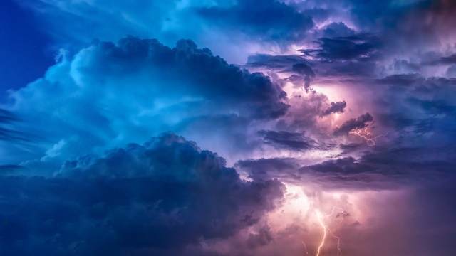

Najwięcej opadów otrzymują Alpy Zachodnie – do 4000 mm rocznie, Alpy Wschodnie ok. 2500-3000 mm, najniższe opady (poniżej 500 mm) notowane są w wewnętrznych kotlinach Alp Wschodnich. Charakterystycznym zjawiskiem są silne, ciepłe wiatry fenowe. Alpy są obszarem źródłowym wielu rzek Europy Zachodniej. Biorą tu swój początek: Adyga, Pad i większość jego dopływów (m.in.: Ticino, Adda, Oglio), Rodan i jego dopływy (Durance i Isère), Ren i jego dopływ Aare oraz wiele rzek dorzecza Dunaju (m.in.: Lech, Inn, Salzach, Aniza, Raba, Mura, Drawa i Sawa). Szerokie, wychodzące na przedpole Alp doliny wypełniają miejscami rozległe polodowcowe jeziora, m.in.: Genewskie, Czterech Kantonów, Bodeńskie, Garda, Como i Maggiore.
Pochodzenie nazwy jest niepewne, niektórzy wiążą ją z celtyckim rdzeniem alb, oznaczającym „wysokość”, inni natomiast wskazują na łaciński przymiotnik albus – „biały”, co miało odnosić się do ośnieżonych szczytów Alp. Ta druga hipoteza jest wątpliwa, zważywszy, że na terenie całego łańcucha określenie „alp” odnosi się do wysokogórskich pastwisk (w Polsce nazywanych halami), a nie do szczytów górskich.

